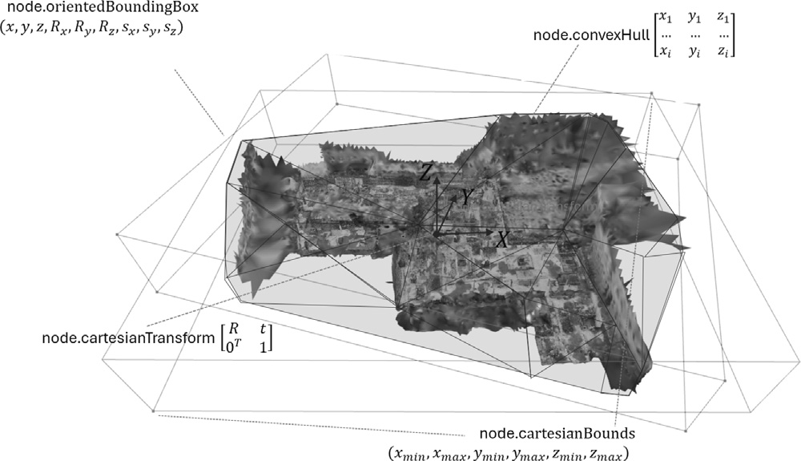

Nodes
GEOMAPI manages geospatial data as linked data resources, represented as RDF Graphs. The framework inputs include various types of close-range sensing data, such as geolocated imagery, point clouds, polygonal meshes, as well as construction data comprising BIM and CAD geometries. From these inputs, a series of metadata is extracted and serialized into RDF Graphs, that are compatible with efficient retrieval functions.
GEOMAPI currently defines a general Node type with 7 data classes governed by 3 supertypes: Node is the most general one, GeometryNode for geometric inputs and ImageNode for image inputs. Each data class inherits functionality from the supertypes and extracts the metadata of its respective resource.

Node
The general Node class serves as a template and stores the metric information in accordance with the conceptual framework outlined in the OpenLabel Standard, including:
cartesianTransform: 4x4 transformation matrix with pose information T = [R t; 0^T 1]
cartesianBounds: tupple with (xmin, xmax, ymin, ymax, zmin, zmax)
Oriented Bounding Box: 9x1 matrix (x, y, z, Rx(θ), Ry(φ), Rz(ψ), sx, sy, sz) which includes:
The location (x, y, z)
The rotation around the three cardinal axes applied in the order \(R_z\) (yaw), \(R_y\) (pitch), \(R_x\) (roll)
The size (sx, sy, sz) in each direction.
Convex Hull: Bounding volume stored by its bounding points as an nx3 matrix: [x1 y1 z1;x2 y2 z2; …]
Non-metric information includes:
The timestamp
subject: RDF conform URI
name: an rdfs label describing the resource. This can be any text i.e. ‘mynode&)!’
The type of coordinate system
The path to the resource
Additional resource-specific details such as image width.
Initilisation
Nodes can be initialized from a range of inputs i.e. the name or a subject. This is only used when no more specific node class can be used e.g. when its a new sort of data.
from geomapi.nodes import Node
Node( subject = None, # (URIRef, optional) : A subject to use as identifier for the Node.
graph = None, # (Graph, optional) : An RDF Graph to parse.
graphPath = None, # (Path, optional) : The path of an RDF Graph to parse.
name = None, # (str, optional) : A name of the Node.
path = None, # (Path, optional) : A filepath to a resource.
timestamp = None, # (str, optional) : Timestamp for the node.
resource = None, # (optional) : Resource associated with the node.
cartesianTransform = None, # (np.ndarray, optional) : The (4x4) transformation matrix.
orientedBoundingBox = None, # (o3d.geometry.OrientedBoundingBox, optional) : The oriented bounding box of the node.
convexHull = None, # (o3d.geometry.TriangleMesh, optional) : The convex hull of the node.
loadResource = False, # Load the resource at initialization?
)
An important aspect of the Node system is its RDF Graph functionality. Each Node can be translated into a Graph and vice versa. This allows to store information about a resource in a database system, and efficiently retrieve information without having to load the actual resources.
from geomapi.nodes import Node
import geomapi.tools as tl
# Create a node from a graph
node = Node(graph=rdflib.Graph())
# Create a series of nodes from a graph file
nodes = tl.graph_to_nodes('../tests/testfiles/graphs/graph.ttl')
# Write a node to a Graph
graph = node.get_graph()
See the tutorial on Nodes for more examples on how to create nodes.
Geometry-based Nodes
The geometry-based Nodes in GEOMAPI specify data and metadata for resources characterized by exact geometric properties, i.e., those whose boundaries are precisely defined by their geometric resource. Currently, we include
PointCloudNode: For point cloud data, capturing detailed spatial information from LiDAR and photogrammetry.
MeshNode: For polygonal meshes, representing 3D surfaces and structures.
BIMNode: For Building Information Models, linking to detailed architectural and structural data.
LineSetNode: For CAD geometries, representing lines and simple geometric shapes.

from geomapi.nodes import PointCloudNode, MeshNode, BIMNode
pcdNode = PointCloudNode(path = 'path/to/pointcloud.pcd')
meshNode = MeshNode (path = 'path/to/mesh.obj')
bimNodes = BimNode(path = 'path/to/bimElement.ifc')
Image-based Nodes
The image-based Nodes in GEOMAPI are designed to define data and metadata for geolocated image-based resources, such as those processed by Structure-from-Motion (SfM) pipelines or Mobile Mapping Systems (MMS).
ImageNode: For conventional imagery, capturing images from standard cameras.
PanoNode: For panoramic imagery, capturing 360-degree views.
OrthoNode: For orthomosaic imagery, representing top-down images often used in mapping and surveying.

from geomapi.nodes import ImageNode, PanoNode, OrthoNode
imgNode = ImageNode(path = 'path/to/image.jpg')
panoNode = PanoNode(path = 'path/to/pano.png')
orthoNode = OrthoNode(path = 'path/to/ortho.png')